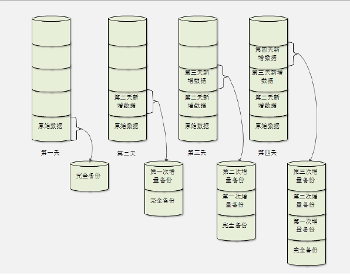

1、Linux服务器中哪些数据需要备份
1）Linux系统重要数据
Linux系统中哪些数据需要备份，不同的管理员有不同的理解，不过有这样的一些数据是大家公认的需要备份的数据，主要有以下这些：
/root/目录：是管理员的家目录，很多管理员会习惯于在此目录中保存一些相关数据，那么进行数据备份时，需要备份此目录。
/home/目录：普通用户的家目录，如果是生产服务器，这个目录中也会保存大量的重要数据，应该备份。
/var/spool/mail/目录：默认情况下，所有的用户未讲读的邮件会保存在/var/spool/mail/目录中和用户名相同的邮箱文件中，已读邮件会保存在用户家目录中mbox文件中（mail命令默认是如此保存，不过如果使用了hold命令，那么不管邮件是否已读，都保存在/var/spool/mail/目录中，可以使用mbox命令恢复已读邮件保存在~/mbox文件中）。一般情况下，用户的邮件也是需要备份的重要数据。
/etc/目录：系统重要的配置文件保存目录，当然需要备份。
其他目录：根据系统的具体情况，备份自己认为的重要目录。比如系统中有重要的日志，或者安装了RPM包的mysql（RPM包安装的mysql，数据库保存在/var/lib/mysql/目录中），那么/var/目录就需要备份。如果服务器中安装了多个操作系统，或编译过的新内核，那么/boot/目录就需要备份。
2）安装服务的数据
Linux服务器中会安装各种各样的应用程序，这些程序中也有重要的数据需要备份。不过应用程序是多种多样的，每种应用要备份什么数据，也不尽相同，要具体情况具体对待。以最常见的apache服务和mysql服务为例：
apache需要备份如下内容：
配置文件。RPM包安装的apache，需要备份/etc/httpd/conf/httpd.conf；源码包安装的apache服务则备份/usr/local/apache2/conf/httpd.conf。
网页主目录。RPM包安装的apache，需要备份/var/www/html/目录中的所有数据；源码包安装的apache需要备份/usr/local/apache2/htdocs/目录中的所有数据。
日志文件。RPM包安装的apache，需要备份/var/log/httpd/目录中所有日志；源码包安装的apache需要备份/usr/local/apache2/logs/目录中所有日志。
其实源码包安装的apache来讲，只要备份/usr/local/apache2/目录中所有数据即可，因为源码包安装的服务所有数据都会安装到指定目录中。但是如果是RPM包安装的服务，就需要单独记忆和指定了。
mysql服务需要备份以下内容：
mysql备份的内容主要是数据库内容。
源码包安装的mysql，数据库安装到了/usr/local/mysql/data/目录中，只要此目录即可
RPM包安装的mysql，数据库默认安装到/var/lib/mysql目录中，需要备份则备份这个目录。
2、备份策略
1）完全备份
完全备份就是指把所有需要的备份数据全部备份，完全备份可以备份整块硬盘，整个分区或某个具体的目录。完全备份的好处就是数据恢复方便，因为所有的数据都在同一个备份中，所以只要恢复完全备份，所有的数据都会恢复。如果完全备份是整个硬盘，那么甚至不需要数据恢复，只要把备份硬盘安装上，服务器就会恢复正常。可是完全备份的缺点也很明显，那就是需要备份的数据量较大，备份时间较长，占用的空间较多，所以完全备份不可能每天执行。
我们一般会对关键服务器进行整盘完全备份，如果出现问题，可以很快的使用备份硬盘进行替换，从而减少缺失。甚至会对关键服务器搭设一台一模一样的服务器，这样几需要远程几个命令（或使用shell自动检测，自动进行服务器替换），备份服务器就会接替原来的服务器，使我们的故障响应时间缩短为最短。
2）增量备份
完全备份随着数据量加大，备份耗费的时间和战用的空间越来越多，所以完全备份不会也不能每天执行。这时增量备份的作用就体现了出来。增量备份是指先进行一次完全备份，服务器运行一段时间后，比较当前系统和完全备份数据之间的差异，只备份有差异的数据而已。服务器断续运行，再经过一段时间运行后，进行第二次增量备份，第二次增量备份时，当前系统是和第一次增量备份的数据时行比较，也只是备份有差异的数据。第三次增量备份是和第二次增量备份的数据进行比较，依此类推。

假设第一天时，进行一次完全备份。第二天增量备份时，只会备份第二天和第一天之间的差异数据，但是第二天的总备份数据是完全备份加第一次增量备份的数据。第三天增量备份，只会备份第三天和第二天之间的差异数据，第三天的总量备份数据是完全备份加第一增量备份再加第二次的增量备份的数据。当然第四天的增量备份时，只会备份第四天和第三天之间的差异数据，数据是完全备份加第一次增量备份加第二次增量备份再加第三次增量备份的数据。
这种备份的好处是每次备份的数据较少，耗时较少，占用的空间较少。坏处是数据恢复较麻烦。当恢复数据时，就要先恢复完全备份数据，再依次恢复第一次增量备份数据，第二次增量备份数据和第三次增量备份数据，最终才能恢复所有的数据。
3）差异备份
差异备份也要先进行一次完全备份，但是和增量备份不同的地方是，每次差异备份都是备份和原始的完全备份不同的数据。也就是说差异备份的参照物都是原始的完全备份，而不是上一次的差异备份。

所设第一天时，也进行一次完全备份。第二天差异备份时，会备份第二天和第一天之间的差异数据，而第一天的备份数据是完全备份加第一次差异备份的数据。第三天进行差异备份时，还是会和第一天的原始数据进行对比，把第二天和第三天所有的数据都备份到第二次差异备份中，第三天的备份数据是完全备份加第二次差异备份的数据。第四天进行差异备份时，也是会和第一天的原始数据对比，把第二天、第三天和第四天所有的不同的数据都备份到第三次差异备份数据中，第四天的备份数据是完全备份加第三次差异备份的数据。
差异备份相比较而言，既不要像完全备份一样把所有数据都时行备份，也不像增量备份数据恢复那么麻烦。只要先恢复完全备份数据，再恢复差异备份数据即可。不过随着时间的增加，和完全备份相比，变动的数据越来越多，那么差异备份也可能会变得数据庞大，备份缓慢，占用空间大。
二、备份与恢复工具：dump和restore
1、dump命令
dump命令默认是没有安装，先安装dump命令：
[root@localhost ~]# yum -y install dump
dump命令有0-9十个备份级别。其中0级别指的就是完全备份，1-9级别都是增量备份级别。也就是说，当我们备份一个数据时，第一次备份应该使用0级别，会把所所有数据完全备份一次。第二次备份时就可以使用1级别，它会和0比较，把0级别备份之后的变化数据时行备份。第三备份时，使用2级别，2级别是和1级别比较，把1级别备份之后的变化数据进行备份，依此类推。需要注意的是，只有备份整个分区或整块硬盘时，才能支持1-9的增量备分级别。而如果只是备份某个文件或不是分区的目录，则只能使用0级别进行完全备份。命令格式如下：
[root@localhost ~]# dump [选项] 备份之后的文件名 原文件和目录
选项：
-level：就是我们说的0-9个备份级别
-f 文件名：指定备份之后的文件名
-u： 备份之后，把备份时间记录在/etc/dumpdates文件中
-v：显示备份过程中更多的输出信息
-j：调用bzlib库压缩文件，其实就是把备分文件压缩为.bz2格式，默认压缩等级是2。
-W：显示允许被dump的分区的备份等级及备份时间
备份分区
[root@localhost ~]# df -h
Filesystem Size Used Avail Use% Mounted on
/dev/sda5 16G 2.2G 13G 15% /
tmpfs 122M 0 122M 0% /dev/shm
/dev/sda1 194M 28M 157M 15% /boot
/dev/sda2 2.0G 35M 1.8G 2% /home
/dev/sda5 16G 2.2G 13G 15% /
tmpfs 122M 0 122M 0% /dev/shm
/dev/sda1 194M 28M 157M 15% /boot
/dev/sda2 2.0G 35M 1.8G 2% /home
#查看系统中分区的详细信息
[root@localhost ~]# dump -0uj -f /root/boob.bak.bz2 /boot/
#备份/boot/分区，完全备份，并压缩和更新备份时间
[root@localhost ~]# cat /etc/dumpdates #查看备份时间文件
/dev/sda1 0 Wed May 13 04:05:28 2015 +0800
#备份的分区 备份级别 备份日期
[root@localhost ~]# ll -h /root/boot.bak.bz2 #查看备份文件
-rw-r--r-- 1 root root 20M 5月 13 04:05 /root/boot.bak.bz2
-rw-r--r-- 1 root root 20M 5月 13 04:05 /root/boot.bak.bz2
如果/boot分区的内容发生变化，则可以用1级别进行增量备份，当然如果数据会继续发生变化，还可以继续使用2-9级别增量备份。命令如下：
[root@localhost ~]# ll -h install.log
-rw-r--r--. 1 root root 26K 3月 2 00:28 install.log
-rw-r--r--. 1 root root 26K 3月 2 00:28 install.log
#查看安装软件包日志的大小为26KB
[root@localhost ~]# cp install.log /boot/ #复制日志文件到/boot分区
[root@localhost ~]# dump -1uj -f /root/boot.bak1.bz2 /boot/ #增量备份/boot分区，并压缩
[root@localhost ~]# ll -h boot.bak*
-rw-r--r-- 1 root root 19K 5月 13 20:29 boot.bak1.bz2
-rw-r--r-- 1 root root 20M 5月 13 04:05 boot.bak.bz2
-rw-r--r-- 1 root root 19K 5月 13 20:29 boot.bak1.bz2
-rw-r--r-- 1 root root 20M 5月 13 04:05 boot.bak.bz2
#boot.bak1.bz2的压缩文件只有19KB，证明了增量备份只备份了0级别以后变化的数据
如果是整个分区备份，那么是可以用”dump -W“命令来查询分区的备份时间及备份级别的，不过要注意，如果备份时没有使用”-u“选项，那么”dump -W“命令是不会记录备份的时间的。命令如下 ：
[root@localhost ~]# dump -W
Last dump(s) done (Dump '>' file systems):
> /dev/sda5 ( /) Last dump: never
/dev/sda1 ( /boot) Last dump: Level 1, Date Wed May 13 20:29:17 2015
> /dev/sda2 ( /home) Last dump: never
Last dump(s) done (Dump '>' file systems):
> /dev/sda5 ( /) Last dump: never
/dev/sda1 ( /boot) Last dump: Level 1, Date Wed May 13 20:29:17 2015
> /dev/sda2 ( /home) Last dump: never
#/分区和/boot分区都进行过dump备份，/boot分区的最新备份级别是1级别
dump命令可以非常方便的增量备份。如何差异备份：先使用0级别完全备份一次，以后每次备份都使用1级别进行备份。
备份文件或目录
dump命令也可以用作备份文件或目录，不过只要不是备份分区，那么就只能使用0级别进行完全备份，而不再支持增量备份。同时，也不能使用”-u“选项，更新分区的备份时间，当然也不能用”dump -W“命令查询到文件和目录的备份。以备份/etc/目录为例
[root@localhost ~]# dump -0uj -f /root/etc.dump.bz2 /etc/ #完全备份/etc/目录
[root@localhost ~]# ll -h /root/etc.dump.bz2 #查看备份文件
-rw-r--r--. 1 root root 8.6M 6月 5 03:26 /root/etc.dump.bz2
要使用增量备份会如何？
[root@localhost ~]# dump -1uj -f /root/etc.dump.bz2 /etc/
DUMP：Only level 0 dumps are allowed on a subdirectory
DUMP：The ENTIRE dump is aborted.
#备份失败，目录备份只能使用0备份级别
2、restore命令
[root@localhost ~]# restore [模式选项] [选项]
模式选项：
restore命令常用的模式下有四种，这四个模式不能混用。
-C： 比较备份数据和实际数据的变化。如果实际数据中的现有数据发生了变化，这个选项能够检测这个变化。但是如果实际数据新增了数据，这个选项是不能检测到变化的。举个例子：别人给了我一百万的投资（实际数据），但是他有一个投资的账本（备份数据），他要时不时的比对账本和实际的一百万投资，如果一百万减少则马上就能发现改变，但是如果钱数增加，则不会报警。
-i： 进入交互模式，手工选择需要恢复的文件。
-t： 查看模式，用于查看备份文件中拥有哪些数据
-r： 还原模式，用于数据还原
选项：
-f：指定备份文件的文件名
比较备份数据和实际数据的变化
这里需要注意，数据比较只有在原有数据减少或变化时才能检测出变化，但新增的数据是不会被检测的。命令如下：
[root@localhost boot]# restore -C -f /root/boot.bak.bz2
Dump tape is compressed.
Dump date: Wed May 13 04:05:28 2015
Dumped from: the epoch
Level 0 dump of /boot on localhost.localdomain:/dev/sda1
Label: none
filesys = /boot
Dump tape is compressed.
Dump date: Wed May 13 04:05:28 2015
Dumped from: the epoch
Level 0 dump of /boot on localhost.localdomain:/dev/sda1
Label: none
filesys = /boot
#restore检测，是没有发现任何变化的（因为备份数据在备份时是没有abc文件的，所以restore命令是不能识别新建文件的）
[root@localhost ~]# mv /boot/vmlinuz-2.6.32-431.el6.i686 /boot/vmlinuz-2.6.32-431.el6.i686.bak
#将/boot目录中内核镜像文件改个名字
[root@localhost ~]# restore -C -f /root/boot.bak.bz2
Dump tape is compressed.
Dump date: Wed May 13 04:05:28 2015
Dumped from: the epoch
Level 0 dump of /boot on localhost.localdomain:/dev/sda1
Label: none
filesys = /boot
restore: unable to stat ./vmlinuz-2.6.32-431.el6.i686: No such file or directory
Some files were modified! 1 compare errors
Dump tape is compressed.
Dump date: Wed May 13 04:05:28 2015
Dumped from: the epoch
Level 0 dump of /boot on localhost.localdomain:/dev/sda1
Label: none
filesys = /boot
restore: unable to stat ./vmlinuz-2.6.32-431.el6.i686: No such file or directory
Some files were modified! 1 compare errors
#restore发现内核镜像文件丢失
#记得将内核文件的文件名改回来
查看模式
[root@localhost ~]# restore -t -f boot.bak.bz2 #查看备份文件中的内容
还原模式
#还原boot.bak.bz2分区备份
#先还原完全备份的数据
[root@localhost ~]# mkdir boot.test #建立准备解压缩的目录。
[root@localhost ~]# cd boot.test/ #进入解压缩目录
[root@localhost boot.test]# restore -r -f /root/boot.bak.bz2 #还原数据
Dump tape is compressed.
Dump tape is compressed.
#再还原增量数据
[root@localhost boot.test]# restore -r -f /root/boot.bak1.bz2 #还原增量数据
Dump tape is compressed.
Dump tape is compressed.
三、备份工具dd
[root@localhost ~]# dd if=“输入文件” of=“输出文件” bs=“数据块” count=“数量”
参数：
if： 定义输入数据文件，也可以是输入设备。
of： 定义输出数据文件，也可以是输出设备。
bs： 指定数据块大小，也就是定义一次性读取或写入多少字节。默认数据块大小是512字节
conut： 指定bs数量
conv=标志： 依照标志转换文件
标志有以下一些：
ascii 由EBCDIIC码转换至ASCII码
ebcdic 由ASCII码转换至EBCDIC码
ibm 由ASCII码转换至替换的EBCDIC码
block 将结束字符块里的换行替换成等长的空格
unblock 将cbs大小的块中尾部的空格替换为一个换行符
lcase 将大写字符转换成小写
notrunc 不截断输出文件
ucase 将小写字符转换成大写
swab 交换每一对输入数据文件
noerror 读取数据发生错误后仍断续
sync 将每个输入数据块以NUL字符填满至ibs的大小；当配合block或unblock时，会以空格代替NUL字符填充
例1：备份文件
[root@localhost ~]# dd if=/etc/httpd/conf/httpd.conf of=/tmp/httpd.bak
#备份文件
例2：将分区备份成一个文件
[root@localhost ~]# dd if=/dev/sda1 of=/tmp/boot.bak
#将分区备份成一个文件
如需恢复，将个输入项和输出项反过来即可
[root@localhost ~]# dd if=/tmp/boot.bak if=/dev/sda1
#还原文件成分区
如果想要把分区直接备份成另外一个分区，就需要生成一个新的分区，这个分区的大小不能比源分区小，只能和源分区大小一致或比源分区大。
例3：备份分区到另一个新分区
[root@localhost ~]# dd if=/dev/sda1 of=/dev/sdb1
#如果需要恢复将输入项与输出项反过来即可
[root@localhost ~]# dd if=/dev/sdb1 of=/dev/sda1
例4：整盘备份
[root@localhost ~]# dd if=/dev/sda of=/dev/sdb
#把磁盘a备份到磁盘b
[root@localhost ~]# dd if=/dev/sda of=/tmp.disk.bak
#把磁盘a备份成文件disk.bak
#备份恢复
#如果备份是是备份到另外一块硬盘上，当源硬盘数据损坏了，只要把备份硬盘替换成源硬盘即可
#如果是备份成文件，恢复时需要把备份数据拷贝到其他linux中，然后把新硬盘安装到这台linux服务器上，然后把磁盘备份数据拷贝到新硬盘当中。命令如下：
[root@localhost ~]# dd if=/tmp/disk.bak of=/dev/sdb
例5：制作光盘iso镜像
[root@localhost ~]# dd if=/dev/cdrom of=/tmp/cd.iso
#将光盘中所有数据制作成iso镜像